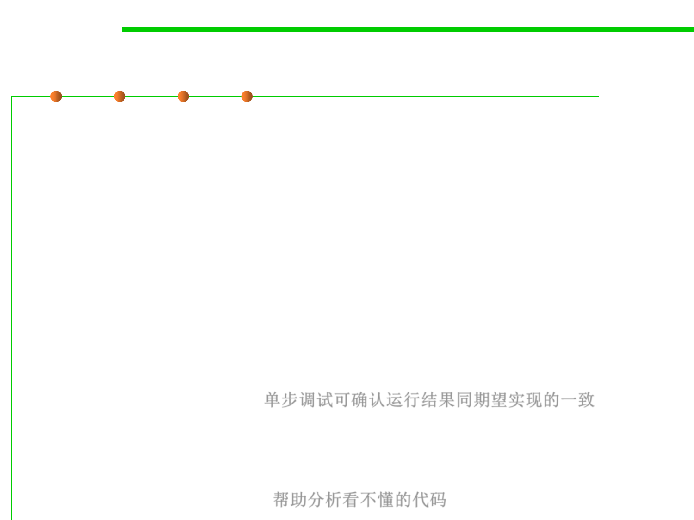

Diagnosis stratagem 6: Debugger
7.4 Debugging
▪ Debugger
– Debuggers vary dramatically in both sophistication and capabilities, from
simple command line–oriented examples to those that are fully integrated
into a graphical IDE.
– What they all have in common is that they allow us to examine the code as it
executes, setting breakpoints, single-stepping, and examining program
state.
▪ It’s particularly helpful at three different points of the development
life cycle:
– During initial development, it’s helpful when single-stepping through code
helps to convince us that what it’s really doing agrees with what we thought
we were implementing. 单步调试可确认运行结果同期望实现的一致
– If we have a theory about why the code is behaving in a particular way, we
can use the debugger to confirm or refute this theory. 验证想法的正确性
– Finally, a debugger helps us explore code that is behaving in a way we
simply don’t understand. 帮助分析看不懂的代码